2026.03
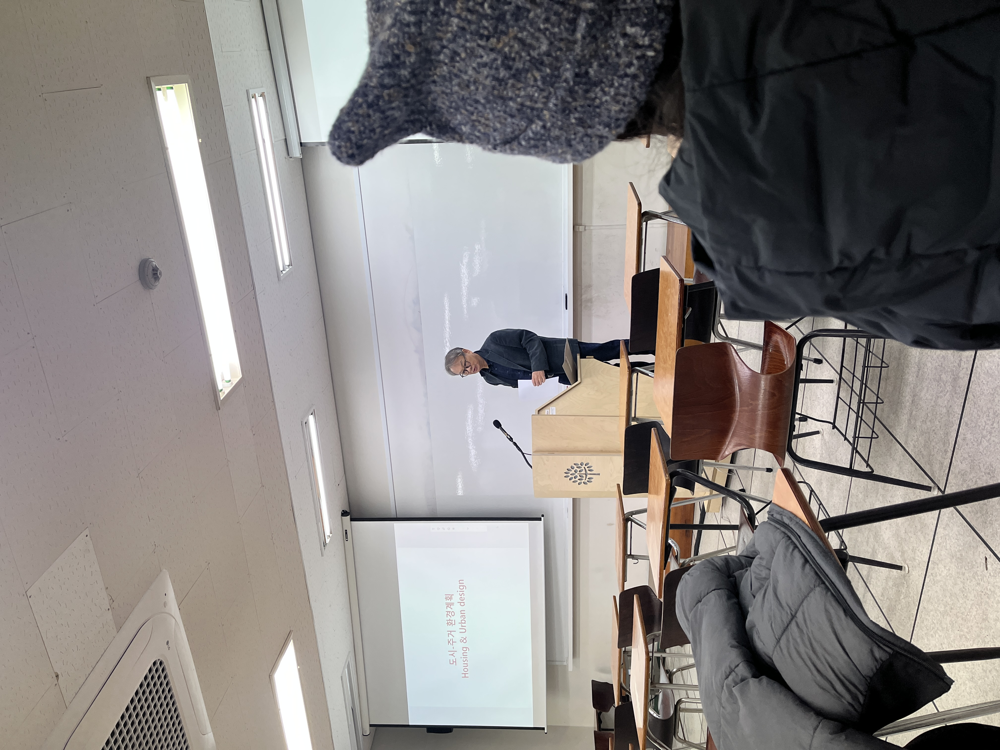
3월의 개강
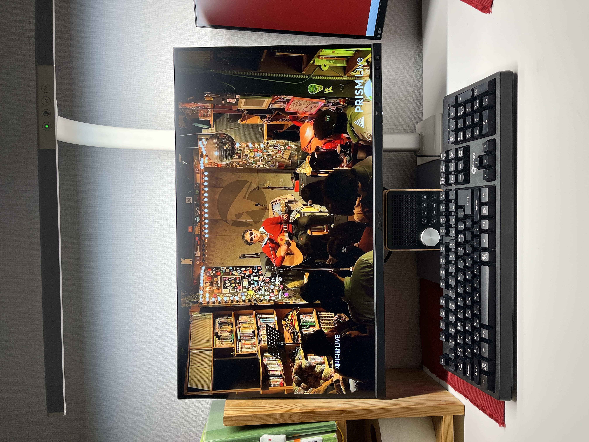
그 어둡고 칙칙한 공간에서 당신의 수수함은 횃불 같아요...
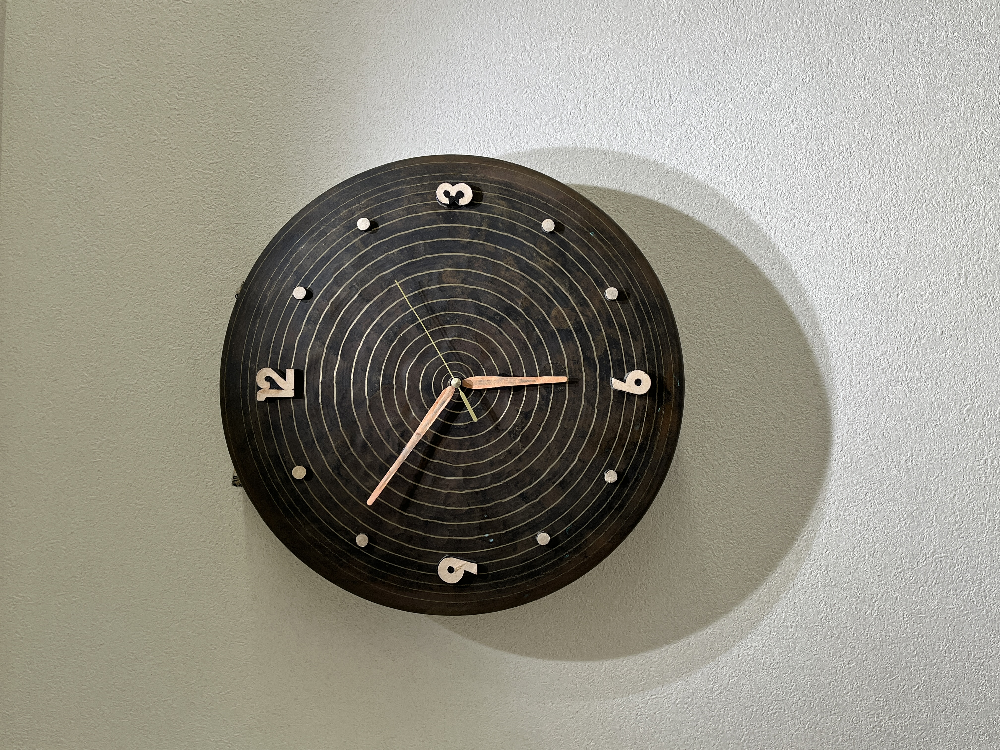
3월 아름다운 우리집 거실 시계.(징으로 만든)
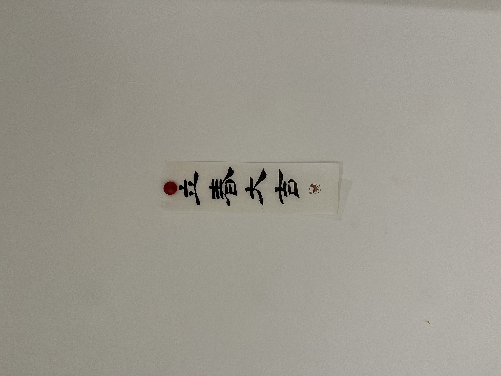
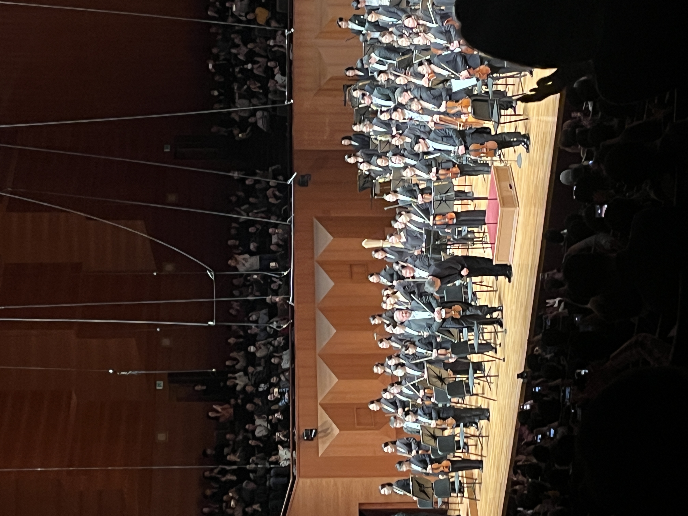
예술의 전당에서 말러 심포니 5번.
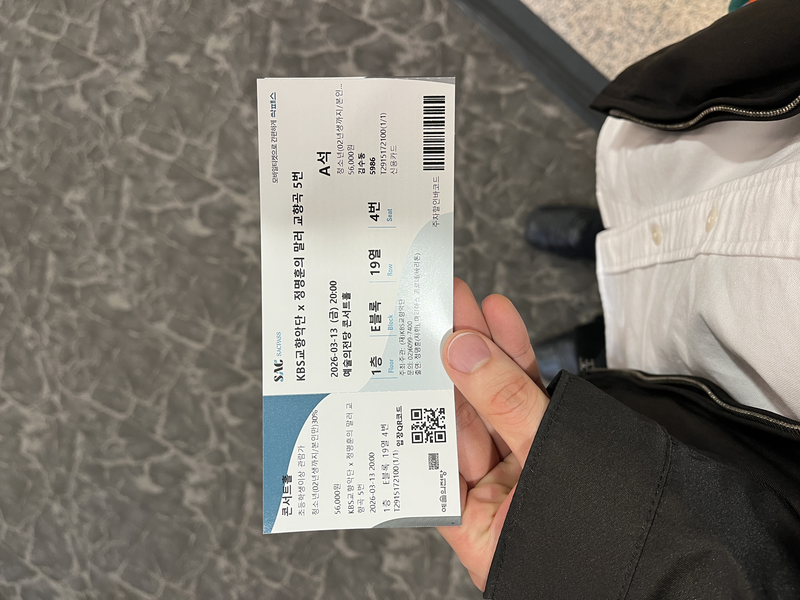
8시 공연 전에 로비에서 커피 한잔 마셨다.
이때 귀동냥으로 로열 콘세르트헤바우 오케스트라의 호른
수석이 나온다는 사실을 엿들었다.
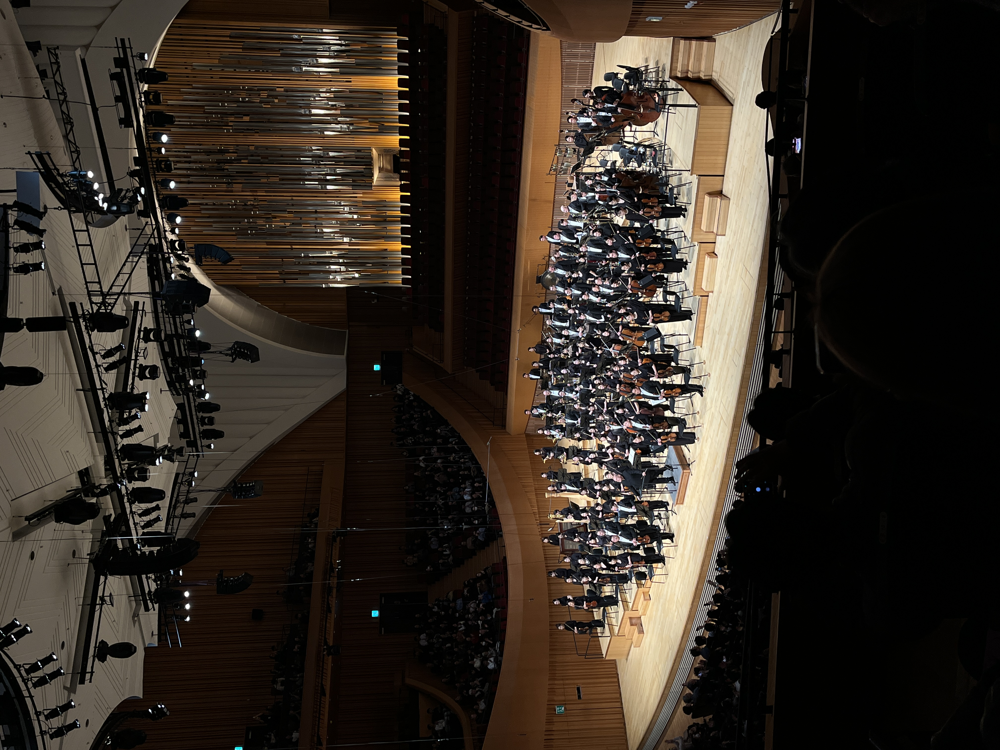
일주일 간격을 두고 롯데콘서트홀에서 말러 심포니를 또 들었다.
자체 말러의 달 3월.
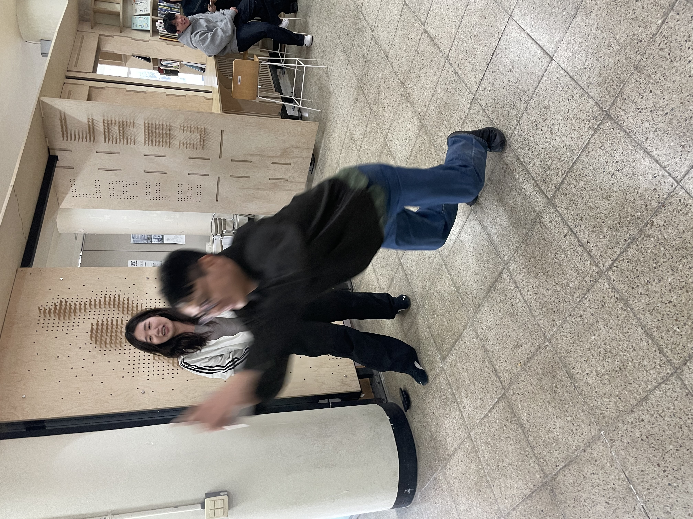
동생에게도 늘 최선을 다해야 한다.
져주고 그런거 없다.
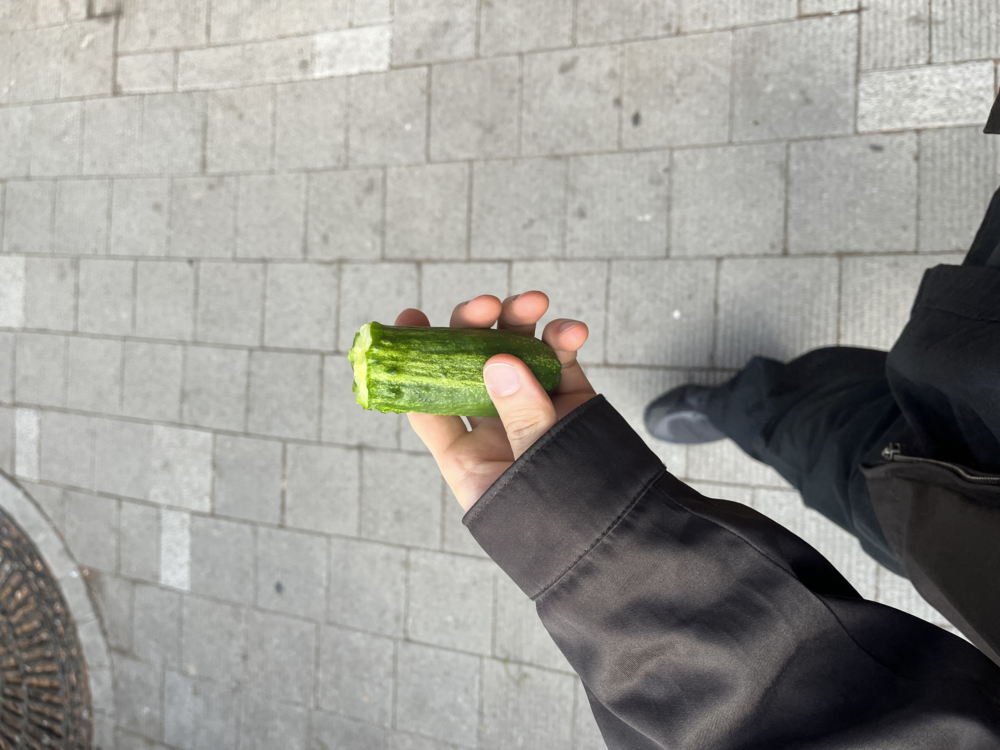
서울에서의 아침 식사
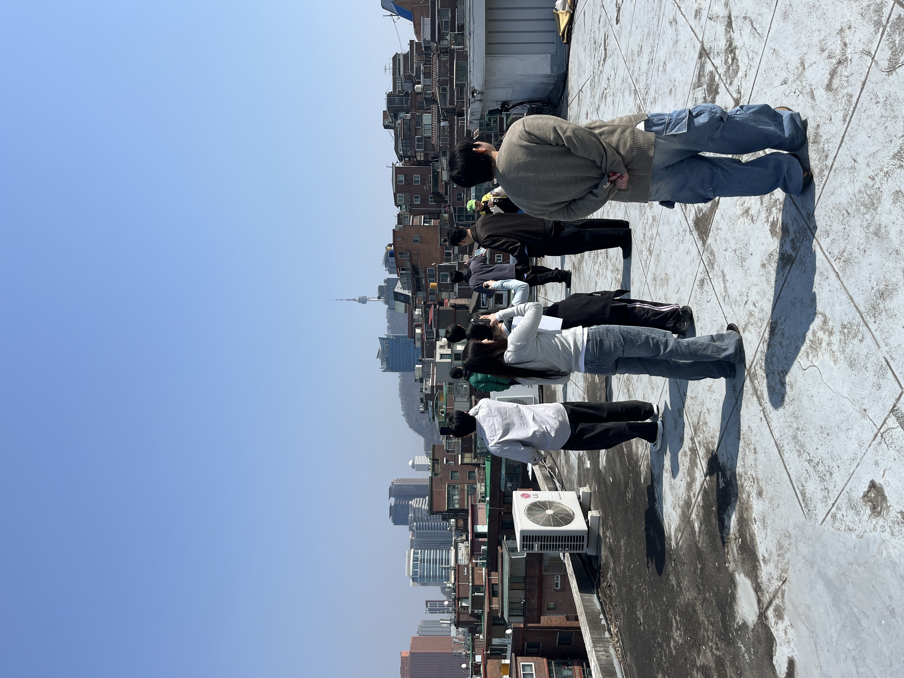
너히비 팀과 서교동에서 워크샵을 진행했다.
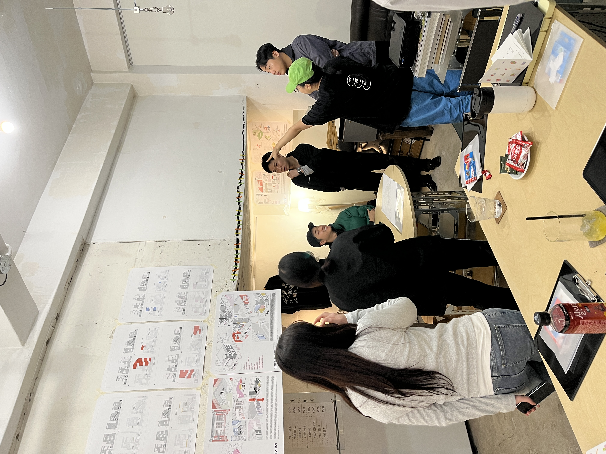
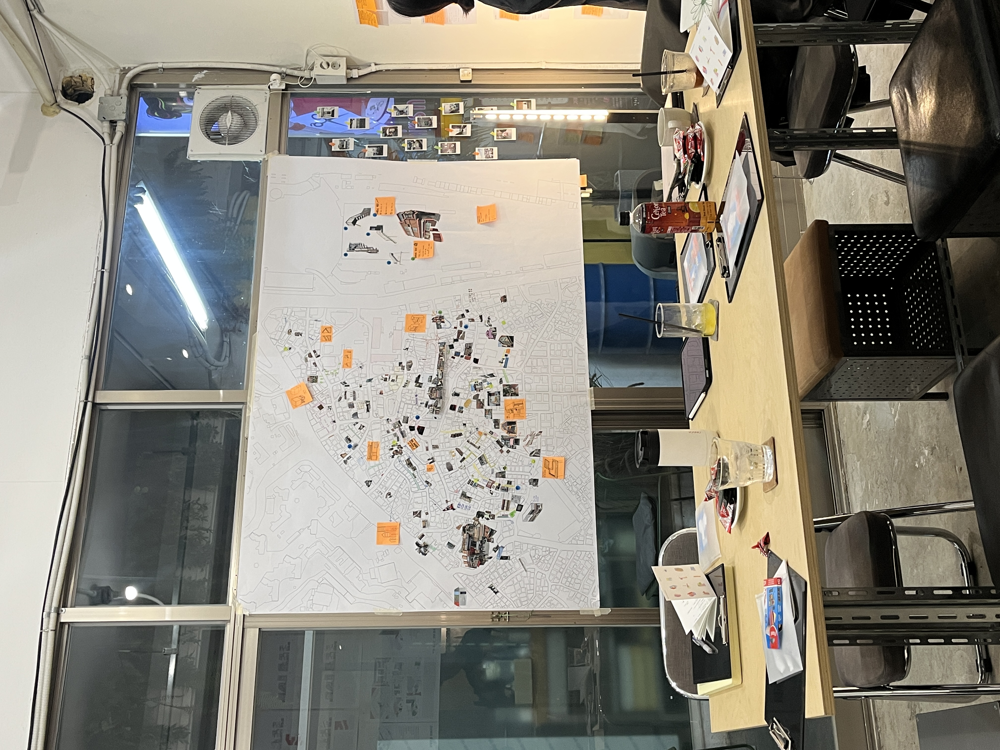
인사동 칼국시